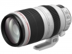
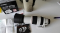
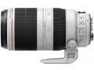
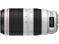

器材库 > 35mm画幅AF变焦镜头 > EF 100-400/4.5-5.6L IS II USM

详细规格
镜头类型
远摄变焦镜头
发布日期
2014-11-11
厂家推荐价格
2,199.00 （美元）
焦距
100mm-400mm
最大光圈
f/4.5-5.6
最小光圈
f/32-38
镜头结构
21片/16组
低/超低色散镜片
1片
光圈叶片
9片
最近对焦距离
98cm
最大放大倍率
0.31倍
驱动马达
USM（超声波马达）
滤镜口径
77mm
镜头卡口
Canon EF
防抖
是
颜色
白色
尺寸
94x193mm
重量
1570g
哈斯2016-05-24 23:104.25 分
操作性 4.50耐用性 4.00性价比 5.00解像力 4.00色彩还原 4.00机械结构 4.00
sneeze2016-05-06 16:474.67 分
操作性 4.00耐用性 5.00性价比 4.00解像力 5.00色彩还原 5.00机械结构 5.00
cybertron2016-05-02 08:324.33 分
操作性 5.00耐用性 4.50性价比 4.00解像力 4.00色彩还原 4.00机械结构 4.50
lightbb2015-12-29 13:063.92 分
操作性 4.50耐用性 4.50性价比 2.50解像力 4.00色彩还原 4.00机械结构 4.00
gzfanco2015-06-06 12:004.83 分
操作性 5.00耐用性 5.00性价比 4.00解像力 5.00色彩还原 5.00机械结构 5.00
快门加鼠标2015-04-10 16:124.58 分
操作性 4.50耐用性 4.50性价比 4.00解像力 4.50色彩还原 5.00机械结构 5.00
蛇行千里2015-03-12 20:26
哈斯2015-03-09 00:284.42 分
操作性 4.50耐用性 5.00性价比 4.00解像力 3.50色彩还原 5.00机械结构 4.50
xinwen88522015-03-03 10:043.67 分
操作性 4.50耐用性 4.00性价比 2.00解像力 3.50色彩还原 4.00机械结构 4.00
kmp2015-02-19 15:224.75 分
操作性 5.00耐用性 4.50性价比 4.00解像力 5.00色彩还原 5.00机械结构 5.00
重慶句號2015-01-22 18:24
kzlj4242014-12-31 16:094.92 分
操作性 5.00耐用性 5.00性价比 4.50解像力 5.00色彩还原 5.00机械结构 5.00
kzlj4242014-12-31 15:40
longyg2014-12-25 19:22

产品图 / 样片

